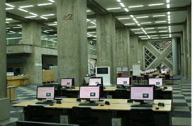
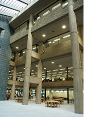
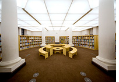

Perpustakaan Parlemen Jepang (国立国会図書館, Kokuritsu Kokkai Toshokan, bahasa Inggris: National Diet Library, disingkat NDL) yaitu perpustakaan yang memberi layanan referensi untuk Parlemen Jepang, lembaga eksekutif, dan warga umum di Jepang. Perpustakaan ini yaitu perpustakaan parlemen yang membantu parlemen dalam membikin undang-undang, sekaligus perpustakaan nasional (perpustakaan deposit) yang mengumpulkan dan menyimpan seluruh terbitan yang diterbitkan di Jepang. Perpustakaan pusat ada di dua lokasi: Gedung Utama Tokyo di Nagatachō, distrik kota Chiyoda, Tokyo dan Perpustakaan Parlemen Jepang Gedung Kansai di Seika, Distrik Sōraku, Kyoto, Prefektur Kyoto. Perpustakaan mata-mata negara asing yang melayani bagian parlemen ada di Gedung Parlemen Jepang. Sebagai lembaga negara independen di bawah Parlemen Jepang, perpustakaan ini ada di bawah pengawasan Ketua Majelis Rendah dan Ketua Majelis Tinggi, serta Komite Pengarah Parlemen yang yaitu panitia kerja dari kedua kamar di parlemen. Kepala Perpustakaan Parlemen Jepang bertanggung jawab kepada ketua majelis rendah dan majelis tinggi.
| Juni 1948 | NDL dibuka untuk umum dengan menggunakan bekas Istana Terpisah Akasaka (sekarang Guest House Negara) sebagai fasilitas sementara. |
|---|---|
| Agustus 1961 | Tahap pertama fasilitas Nagata-cho saat ini telah selesai |
| 1968 | Bangunan utama fasilitas Nagata-cho selesai |
| 1986 | Lampiran fasilitas Nagata-cho selesai |
| Mei 2000 | Perpustakaan Sastra Anak Internasional (ILCL) dibuka sebagian di bekas cabang Perpustakaan Ueno yang telah direnovasi |
| Mei 2002 | ICLL terbuka penuh |
| Oktober 2002 | Kansai-kan dari Perpustakaan Diet Nasional dibuka |
| Oktober 2004 | Sistem layanan baru diperkenalkan di Perpustakaan Utama Tokyo |
| Januari 2012 | Sistem layanan dirubah |
| September 2015 | Layanan dimulai di Gedung Lengkungan ILCL. |
Pada awal berdirinya pascaperang, Perpustakaan Diet Nasional bertempat di bekas Istana Terpisah Akasaka (sekarang Wisma Negara). Tahap 1 Gedung Utama NDL yang sekarang selesai dibangun pada tahun 1961 dan Tahap 2 pada tahun 1968. Untuk mengimbangi peningkatan material dan layanan yang terus-menerus, gedung Annex dibangun dan dibuka pada tahun 1986 kecuali beberapa tumpukan. Seluruh Annex selesai dibangun pada tahun 1993. Total luas lantai kedua bangunan ini adalah 148.000 meter persegi dimana 53% di antaranya adalah ruang tumpukan. Kapasitas tumpukannya sekitar 12 juta volume. Bekas Perpustakaan Cabang Ueno di Tokyo diubah menjadi Perpustakaan Internasional Sastra Anak yang dibuka pada Mei 2000, dan Kansai-kan dibuka pada Oktober 2002.
| Gedung Utama | Gedung Utama Perpustakaan Diet Nasional memiliki sistem tumpukan terpusat. Unit ruang tumpukan berukuran 45m kali 45m dan memiliki 17 tingkat vertikal. Total kapasitas tumpukan adalah 4,5 juta volume, dengan lebar tumpukan bertambah hingga 172 km. Untuk pergerakan material yang cepat, ruang tumpukan dilengkapi dengan pipa pembawa pneumatik dan sistem konveyor vertikal/horizontal. Satuan ruang administrasi berbentuk persegi mengelilingi satuan ruang tumpukan persegi. Berukuran 90 m kali 90 m dan setinggi enam lantai, unit ini berisi ruang katalog, ruang baca untuk pengunjung umum, ruang baca dan ruang penelitian untuk Anggota Diet, dan kantor administrasi perpustakaan. Total luas lantai unit ruang tumpukan dan unit ruang administrasi adalah 74.900 meter persegi. |  |
|---|---|---|
| Gedung Annex | Annex terletak tepat di utara Gedung Utama, berbentuk lantai persegi panjang berukuran 148m (dari timur ke barat) kali 43m (dari utara ke selatan), dengan desain khusus yang menekankan pada keterhubungan alami dan harmonis dengan Bangunan Utama. Gedung ini memiliki empat lantai di atas tanah dan delapan lantai di bawah tanah dengan total luas lantai 72.900 meter persegi. Tumpukannya seluruhnya berada di bawah tanah dari basement pertama hingga basement kedelapan dengan kapasitas volume 7,5 juta dengan rak sepanjang 240 km. |  |
| Kansai-Kan | Kansai-kan dari NDL adalah fasilitas di Keihanna Science City dengan ruang penyimpanan besar untuk bahan perpustakaan yang terus bertambah, fungsi perpustakaan elektronik dan layanan penyediaan dokumen dan informasi yang ditingkatkan, untuk bertindak sebagai pusat layanan perpustakaan untuk informasi tingkat lanjut. masyarakat komunikasi. Bangunan ini selesai dibangun pada bulan Maret 2002 dan Kansai-kan dibuka untuk umum pada bulan Oktober tahun yang sama. | |
| Perpustakaan Internasional Sastra Anak | Perpustakaan Sastra Anak Internasional (ILCL) dibuka sebagian untuk umum pada Mei 2000 di bekas gedung Perpustakaan Cabang Ueno di Taman Ueno. Dibuka sepenuhnya pada bulan Mei 2002. Bangunan aslinya dibangun pada tahun 1906 dan diperluas pada tahun 1929. Sebagai representasi arsitektur gaya barat Renaisans pada awal abad kedua puluh, bangunan ini telah ditetapkan sebagai bangunan bersejarah metropolitan oleh Pemerintah Metropolitan Tokyo. Dalam renovasi gedung tersebut untuk menampung ILCL, NDL berupaya melestarikan desain dan struktur yang merupakan warisan arsitektur dari era sebelumnya, sembari meningkatkan bangunan tersebut menggunakan metode tahan gempa untuk meminimalkan kerusakan akibat gempa besar. |  |
Selain Perpustakaan Internasional Bacaan Anak, Toyo Bunko, dan Perpustakaan Mahkamah Mulia Jepang, Perpustakaan Parlemen Jepang membangun perpustakaan cabang di 25 lembaga pemerintah. Duapuluh lima perpustakaan lembaga pemerintah yang sekaligus menjadi cabang Perpustakaan Parlemen Jepang adalah :
Perpustakaan Dewan Pemeriksa Keuangan
Perpustakaan Badan Kepegawaian Negara
Perpustakaan Biro Legislatif Kabinet
Perpustakaan Sekretaris Kabinet
Perpustakaan Dewan Sains Jepang
Perpustakaan Badan Rumah Tangga Kekaisaran
Perpustakaan Komisi Perdagangan Tidak terikat
Perpustakaan Badan Polisi Nasional
Perpustakaan Badan Layanan Keuangan
Perpustakaan Kementerian Dalam Negeri dan Komunikasi
Perpustakaan Biro Statistik Jepang
Perpustakaan Kementerian Kehakiman
Kementerian Luar Negeri
Kementerian Keuangan
Perpustakaan Kementerian Pendidikan
Perpustakaan Kementerian Kesehatan, Tenaga Kerja, dan Kesejahteraan Sosial
Perpustakaan Kementerian Pertanian, Kehutanan, dan Perikanan
Perpustakaan Badan Kehutanan
Perpustakaan Kementerian Ekonomi, Perdagangan, dan Industri
Perpustakaan Kantor Paten Jepang
Perpustakaan Kementerian Pertanahan, Infrastruktur, Perhubungan, dan Pariwisata
Perpustakaan Badan Meteorologi Jepang
Perpustakaan Satuan Penjaga Pantai
Perpustakaan Kementerian Sekeliling yang terkait Hidup
Perpustakaan Kementerian Pertahanan.
1 Chome-10-1 Nagatachō, Chiyoda City, Tokyo 100-0014, Jepang.
+81 3-3581-2331